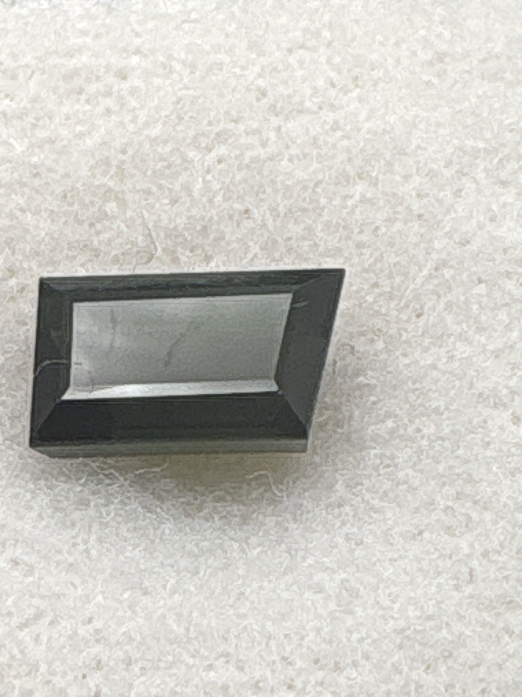

The Gem Drawer › No. 117

A 10.2 x 6.2 mm fancy cut that photographs near-black, not chrome green.
| Catalogue no. | #117 |
|---|---|
| As labeled | Chrome Tourmaline (as labeled) - CAUTION: photographs very dark/near-black rather than the vivid green the label claims - verify true color before listing, may be plain black tourmaline (schorl) instead - see notes |
| Shape / cut | Baguette / fancy |
| Weight | Not recorded |
| Measurements | 10.2 x 6.2 mm |
| Colour | Very dark, near-black with a hint of green (as photographed - notably darker than typical "chrome green") |
| Clarity / condition | Not recorded |